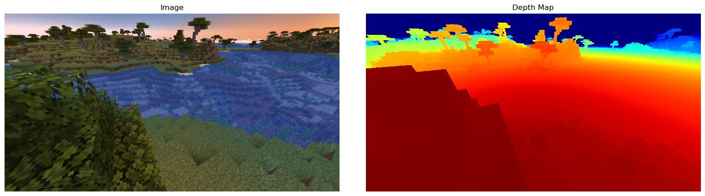
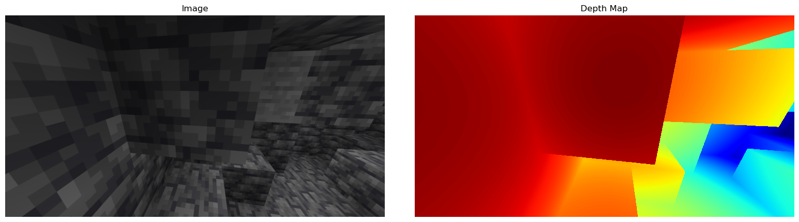
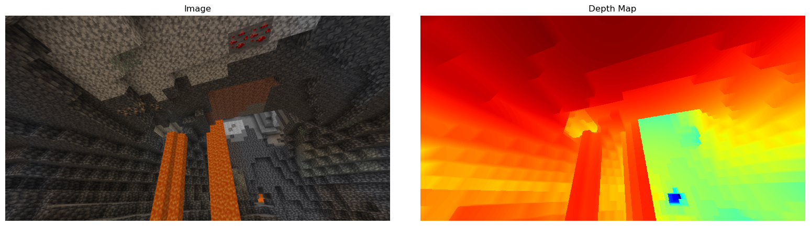

10/21/2024
As AI gets more and more advanced, it is becoming less and less satisfying to make bots to perform basic tasks. Part of the challenge I want to give to myself is to make a minecraft bot without using a mod that gives the agent full access to the world (to make it harder for servers to detect botting just in case). To have a minecraft bot perform advanced tasks, such as going through a cave and breaking certain blocks, it definitely needs advanced vision techniques aside from just classical edge detection and color matching. Towards this end, I created a dataset with over 20,000 images in minecraft with full depth and semantic annotations for use in training CV models.
Minecraft has a somewhat popular modding platform called Forge, which uses the Java programming language. It gives easy access to the primitives of the environment, but somewhat lacks flexibility, especially when compared to Unity or Roblox Studio. To get a fully annotated image, I would need to raycast every pixel on my screen in the direction of every pixel in 3D space. To get the direction of the ray that is needed for a given pixel, we need to cast a 2D screen coordinate to a 3D ray. To do this, we need to use two matrices. First, we need the projection matrix, which is a 4x4 matrix used to convert 3D world coordinates to 2D screen coordinates. Second, we need the view matrix (or the world matrix), which describes how an object is oriented in a 3D environment. We can send the screen coordinates through the inverse of the projection matrix, then the inverse of the view matrix to get our desired ray. Something important to note is that the view matrix is the inverse of the world matrix. Getting the projection matrix was straightforward enough, being accessible from the camera object, but getting the view matrix was very difficult, especially with Forge’s API. Forge seems to have inconsistencies with the handedness of their system. It seems some of their calculations use a right handed coordinate system and some use a left handed coordinate system, making the view matrix very difficult to construct. Luckily, in the calculation of the world matrix, there was no ambiguity in the handedness like cross products. Inverting the world matrix gives us the view matrix, but in hindsight, since we are going to invert the view matrix again anyways, there was no point in this step.
Unfortunately, there is no GPU support for Forge, since it is written in Java, but I was still able to utilize 20 cores for the raycasting. The model is able to capture about one image per second under no supervision, giving us effectively infinite data.
  